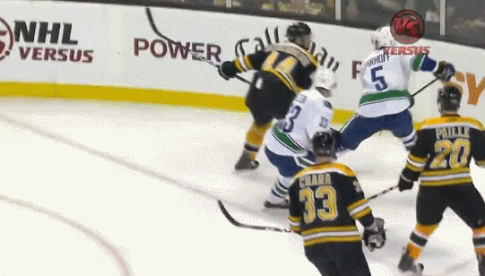

Boston's Bright Future

How a strong veteran core and talented young players have the bruins poised for success
How a strong veteran core and talented young players have the bruins poised for success
Photo by Maddie Meyer/Getty Images
| Games Played | Goals | Assists | Points | +- | TOI |
|---|---|---|---|---|---|
| 63 | 7 | 25 | 32 | 20 | Avg 22:09 |
Photo by Getty Images
| Games Played | Goals | Assists | Points | +- | Avg TOI |
|---|---|---|---|---|---|
| 70 | 16 | 27 | 43 | 19 | 14:22 |
Photo by Adam Richins, Boston Sports Journal
| Games Played | Goals | Assists | Points | +- | Avg TOI |
|---|---|---|---|---|---|
| 12 | 5 | 4 | 9 | 2 | 14:42 |
Photo by AP Photo/Paul Sancya
| Games Played | Goals | Assists | Points | +- | Avg TOI |
|---|---|---|---|---|---|
| 77 | 16 | 31 | 47 | 10 | 15:01 |
Photo by Brian Fluharty-USA TODAY Sports
| Games Played | Goals | Assists | Points | +- | Avg TOI |
|---|---|---|---|---|---|
| 30 | 4 | 8 | 12 | 2 | 12:21 |
Photo by AP Photo/Winslow Townson
| Games Played | Goals | Assists | Points | +- | Avg TOI |
|---|---|---|---|---|---|
| 61 | 3 | 12 | 15 | 21 | 16:44 |